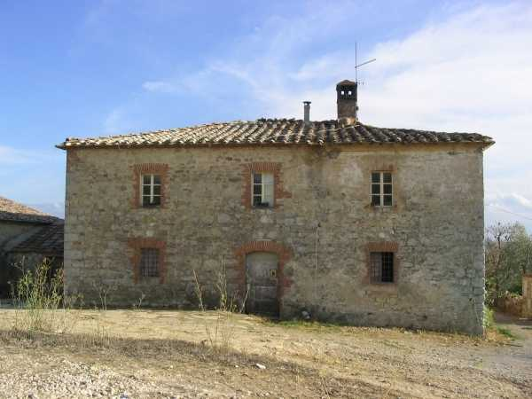
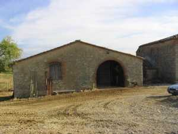
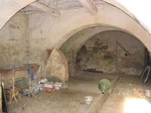

Nel 1668 don Alessandro Girolami parroco di Quercegrossa chiede all’arcivescovo di Siena l’autorizzazione ad imporre le decime al nuovo podere di Casapera. In realtà non si tratta di una nuova edificazione bensì della trasformazione di un esistente fabbricato, probabilmente molto modesto, ma comunque adibito a residenza di un logaiolo che coltivava alcune terre confinanti con Pietralta e soprattutto "la chiusa" cioè la vigna.

Il nome di queste terre era
“Piano al Colle” e l’edificio era detto
"Casa al Piano"; un antico nome già rammentato nel 1319 e la proprietà apparteneva alla famiglia Peri, padroni di Pietralta, Belvedere e nel passato anche di Petroio. I Peri battezzarono il nuovo podere, e forse loro residenza, Casa Peri, volgarizzato poi in Casapera. Non resteranno ancora per molto a Casapera perché verso il 1685 gli subentrano i Nelli che stanno comprando anche a Quetole per unificare quelle terre confinanti sotto la loro unica proprietà che manterranno a lungo, fino al 1820, per cederla poi alla famiglia Nencini del Castello di Quercegrossa.
Nella foto la semplice facciata esposta a nord e in quella seguente la parte sud con i castri e le logge aggiunte successivamente.
Nel 1825 al catasto risulta: Casapera, casa colonica e aia, 1568 bq. (533 mq.); proprietario Nencini Antonio di Domenico. Con i Nencini si apre un capitolo fatto di successioni ed eredita per tutto l’Ottocento e Casapera come Quetole finirà per appartenere alla fattoria di Mucenni e precisamente alla famiglia Casini, ma per seguirne la storia si deve andare al testo di Quetole. Grande e fertile podere Casapera disponeva tra i 15 e i 20 ettari di terreno quasi tutto coltivato anche se in prevalenza sassoso
"ed era ambito dai contadini." Il fabbricato era una solida costruzione a pianta quadrata dotato di tutti gli annessi con una grande capanna e altro piccolo edificio di collegamento con la casa. Le stalle piene di numerosi capi erano moderne e funzionali. Nella parte Sud della costruzione è evidente un’aggiunta posteriore a tutto fabbricato per ottenere due loggette ad arco a tutto sesto per dar luce all’abitazione al primo piano e un grande arco d’ingresso al piano terra. Delle tante famiglie che hanno dimorato a Casapera c’è rimasto il nome di Bastiano di Drea Perilli registrato a Piano al Colle nel 1602, Michele di Domenico Marchi nel 1604 e Antonio Savoi, residente alla Casa al Piano nel 1615. Quindi un Pietro Armeni nel 1672 e Mariano Marzocchi nel 1685. Nel Settecento i Mori, Becucci e Fineschi. Poi, seguono i Tognazzi nell’Ottocento, i Brogi, e i Bucci dal 1860 circa fino al 1931. In tempi recenti, alla partenza dei Bucci subentrarono i Tatini, i Sodini e infine i Baldi, l’ultima famiglia.
Casapera: veduta da sud.


Casapera: a destra le stalle e sotto una veduta da ovest; a sinistra la capanna e sotto i servizi agricoli del podere.